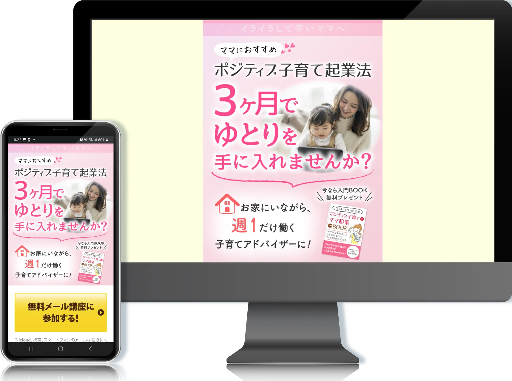
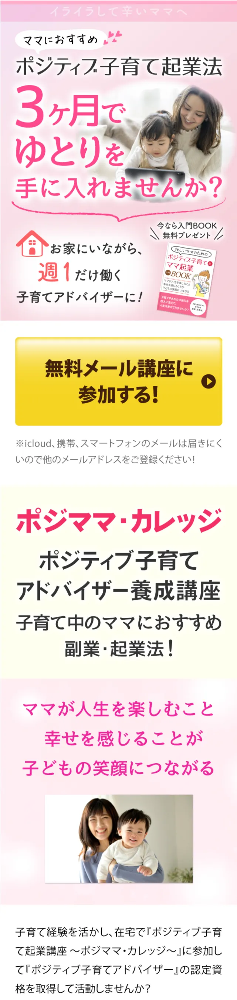
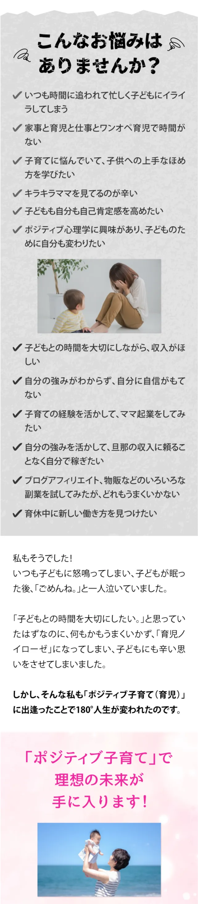
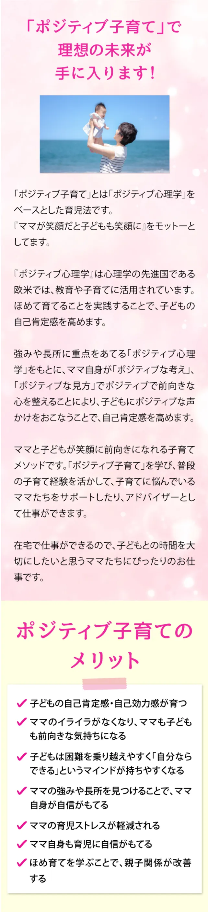
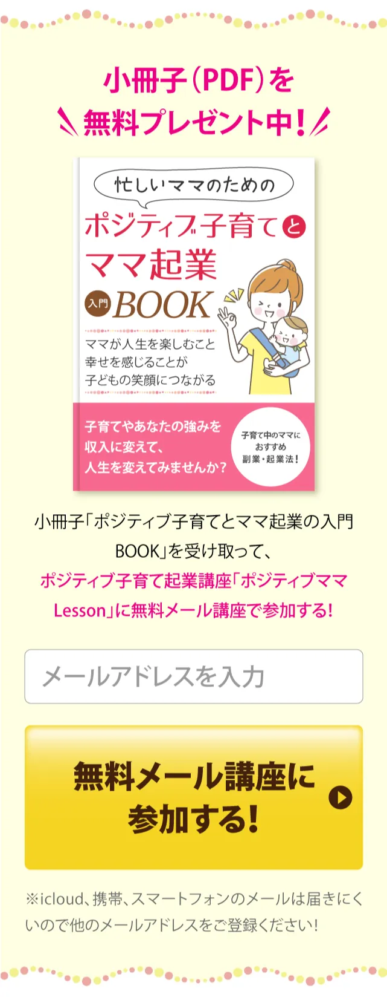

目的：情報の可読性向上・離脱防止
ターゲット：家事や育児に追われる中で、子どもに余裕を持って接することができず自己嫌悪を感じている一方、自分の時間や収入も確保したいと考えている女性
課題：テキスト中心で情報量が多く、内容の魅力や価値が十分に伝わりにくいため、ユーザーの共感や理解につながりにくい構成になっていた点
工夫：情報を役割ごとに整理し、見出し・余白・配色によって視線の流れを設計しました。
スマートフォンでの閲覧を前提に、文字サイズ・余白・改行位置を調整し、可読性を向上しました。
また、特典として訴求されていたPDFコンテンツについて、内容が伝わりやすくなるよう本のモックを作成し、視覚的に「受け取れる価値」がイメージしやすいよう改善しました
担当範囲：ワイヤーフレーム / デザイン（SP）
制作期間：2～3週間



